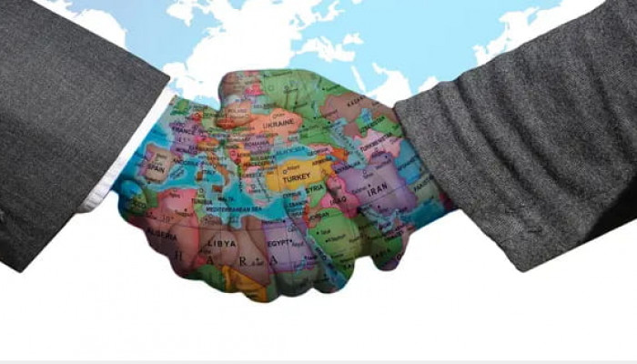
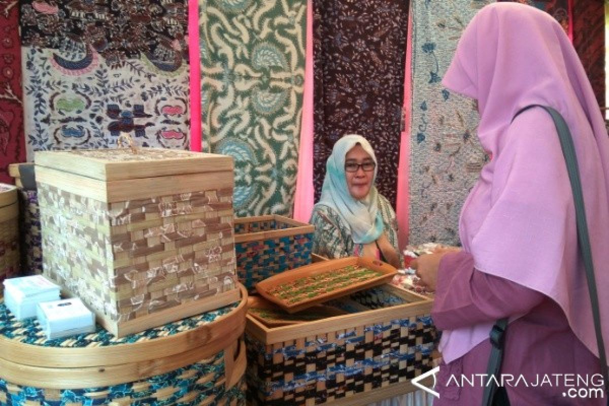
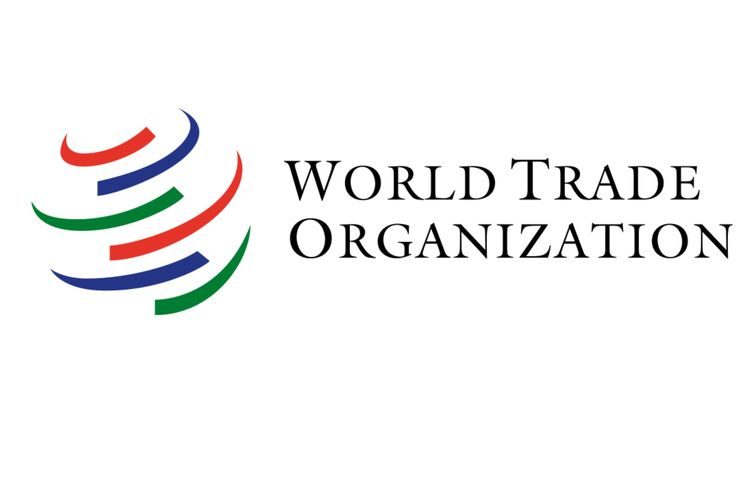

.png)






Apa itu kerjasama? Secara umum, kerjasama adalah kegiatan yang dilakukan oleh 2 orang atau sekelompok orang untuk mencapai sebuah tujuan. Kerjasama terdapat berbagai macam jenisnya, yaitu kerjasama bilateral, regional, dan multilateral. Kerjasama bilateral adalah kegiatan kerjasama antara 2 negara. Contohnya, kerjasama Indonesia dengan China dalam bidang sosial budaya dan pendidikan yaitu pertukaran pelajar untuk mempelajari budaya di negara tersebut (siswa Indonesia ke China mempelajari budaya China, siswa China ke Indonesia mempelajari budaya Indonesia). Kerjasama Regional adalah kerjasama yang dilaksanakan oleh 2 atau lebih negara dalam sebuah kawasan tertentu. Contohnya, ASEAN. Kerjasama multilateral adalah kerjasama yang dilaksanakan oleh 2 atau lebih negara tanpa melihat kawasannya. Contohnya, WTO atau World Trade Organization yang merupakan organisasi perdagangan dunia dimana Indonesia sudah ikut serta dalam persetujuan membentuk WTO pada 1994 saat pertemuan Marrakesh, Maroko.
Dari kerjasama yang diatas, juga terdapat kerjasama internasional yaitu kerjasama yang dilaksanakan oleh 2 atau lebih negara merdeka untuk mencapai tujuan tertentu seperti SDGs. SDGs adalah salah satu kerja sama internasional yang dilaksanakan oleh berbagai negara termasuk Indonesia. Pada September 2015, dalam sidang umum persatuan bangsa-bangsa yang diadakan di New York, Kepala Negara dan perwakilan dari 193 negara telah menyepakati Deklarasi Agenda 2030 untuk Pembangunan Berkelanjutan. Agenda tersebut merupakan sebuah rencana aksi untuk People, Planet, and Prosperity serta untuk penguatan perdamaian universal, yang mencantumkan 17 tujuan dan 169 target yang terukur. Indonesia, salah satu negara yang berkomitmen tinggi melaksanakan dan mencapai TPB/SDGs. Sejak dideklarasikan pada bulan September tersebut, Indonesia telah terlibat aktif dalam berbagai forum global. Persiapan dan pelaksanaan TPB/SDGs dilakukan secara inklusif (upaya untuk menempatkan diri dalam sudut pandang orang lain saat memahami sebuah masalah) dengan melibatkan berbagai macam pihak. Dalam pelaksanaannya, Indonesia memiliki beberapa prinsip, yakni: universal development principles, integration, no one left behind, dan inclusive principals.
Seperti yang sudah dikatakan di paragraf atas, SDGs memiliki 17 tujuan. Tujuan-tujuan tersebut berupa mengakhiri segala bentuk kemiskinan dimanapun, menghilangkan kelaparan, menjamin hidup yang sehat dan kesejahteraan masyarakat, edukasi berkualitas, kesetaraan gender, menjamin ketersediaan air bersih dan sanitasi, menjamin akses energi yang terjangkau, meningkatkan ekonomi yang inklusif dan berkelanjutan, membangun infrastruktur yang tangguh, mengurangi kesenjangan intra dan antarnegara, menjadikan kota dan permukiman berkelanjutan, menjamin pola produksi dan konsumsi berkelanjutan, mengambil tindakan cepat untuk mengatasi perubahan iklim dan dampaknya, melestarikan dan memanfaatkan sumber daya laut, melestarikan dan memanfaatkan sumber daya kehidupan di daratan, menjamin kesejahteraan dan perdamaian dalam masyarakat, dan yang terakhir untuk menguatkan sarana pelaksanaan dan merevitalisasi kemitraan global untuk pembangunan berkelanjutan.
Dari 17 tujuan SDGs tersebut, terdapat 1 yang menonjol bagi saya, yaitu gender equality atau kesetaraan gender yang menjadi tujuan ke-5 dalam SDGs. Topik ini sangat menonjol bagi saya karena di dunia masih banyak orang yang berpikir bahwa laki-laki memiliki kepentingan yang lebih tinggi dibandingkan dengan perempuan dimana hal tersebut sangatlah tidak benar karena kita semua manusia baik laki-laki maupun perempuan jadi seharusnya setiap orang diperlakukan dengan sama walaupun berbeda gender. Dalam konteks ini, Indonesia sudah melaksanakan beberapa hal untuk mencapai kesetaraan gender. Satu kasus yang sering terjadi di Indonesia maupun di luar adalah kekerasan terhadap perempuan. Untuk menghilangkan segala bentuk kekerasan terhadap perempuan di ruang publik dan pribadi, perdagangan manusia dan eksploitasi seksual, serta berbagai jenis eksploitasi lainnya, Indonesia sudah melaksanakan 2 hal, yaitu meningkatkan perlindungan perempuan, termasuk pekerja migran dari kekerasan dan Tindak Pidana Perdagangan Orang (TPPO), kedua adalah menurunnya prevalensi kekerasan terhadap perempuan usia 15-64 tahun di 12 bulan terakhir. Tahun dasar 2016: 9,4% (Sumber data: Survei Pengalaman Hidup Perempuan Nasional 2016).
Salah satu contoh konkret yang dilaksanakan Indonesia untuk mencapai kesetaraan gender adalah Optimalkan PUG, Perlindungan Perempuan dan Anak Melalui Penyelenggaraan Hubungan Politik Luar Negeri. Pada 6 Maret, menteri Pemberdayaan Perempuan dan Perlindungan Anak (PP dan PA), dan Menteri Luar Negeri menandatangani MoU (nota kesepahaman bersama) mengenai “Penerapan Pengarusutamaan Gender, Perlindungan Perempuan dan Anak dalam Rangka Penyelenggaraan Hubungan dan Politik Luar Negeri di gedung Pancasila, Kementerian Luar Negeri.” Kesepakatan tersebut bertujuan untuk meningkatkan efektivitas perencanaan, program, kegiatan, dan Anggaran Responsif Gender (ARG) terkait PUG, perlindungan Perempuan dan Anak dalam rangka penyelenggaraan politik Luar Negeri. Dari perkembangan kerjasama regional, ASEAN, APEC, dan juga kerjasama bilateral maupun multilateral lainnya, semua negara telah sepakat bahwa perempuan dan laki-laki sebagai bagian masyarakat yang akan menerima manfaat dari kerjasama internasional harus menjadi pusat perhatian atau biasa disebut sebagai pendekatan people centered development.
Kerjasama bilateral yang sudah dilaksanakan oleh Indonesia untuk mencapai kesetaraan gender adalah kerjasamanya dengan Iran. Pada tahun 2019 di Semarang (10/4), diujar oleh Kepala Biro Perencanaan dan Data, Fakih Usman bahwa pemerintah Indonesia melalui Kementerian Pemberdayaan Perempuan dan Perlindungan Anak (Kemen PPPA) berkomitmen dalam meningkatkan pemberdayaan perempuan baik di tingkat nasional, regional maupun internasional, serta aktif terlibat dalam asosiasi, hubungan kerjasama dan kemitraan dengan negara-negara di dunia. Demi mewujudkan kesetaraan gender, menyuarakan suara perempuan dan anak sebagai kelompok rentan serta memastikan tersedianya lingkungan hidup yang ramah bagi anak. Fakih Usman juga berharap dengan adanya kunjungan tersebut, Indonesia dan Iran dapat memperkuat hubungan kerjasama yang telah terjalin selama ini. Serta dapat menindaklanjuti pertemuan tersebut dengan program yang positif dan inovatif untuk meningkatkan komitmen dalam pemberdayaan perempuan, ketahanan keluarga, dan perlindungan anak sesuai MoU yang sudah disepakati kedua negara tersebut pada Juli 2018. Pada hari ke-3, 7 delegasi dari Iran yang dipimpin oleh Penasehat Senior Wakil Presiden Bidang Perempuan dan Keluarga, Zahra Javaherian melakukan dialog bersama perwakilan Asosiasi Pendamping Perempuan Usaha Kecil (ASPPUK) untuk saling berbagi informasi dan pengalaman terkait proses pendampingan bagi [perempuan pelaku IR dan usaha mikro (UM) maupun dalam bidang pemberdayaan ekonomi secara menyeluruh di Indonesia. Dalam pertemuan tersebut, dikatakan bahwa para perempuan di Iran menyimpan sisa dana internal sehingga mereka bisa mendirikan koperasi dan terkumpul hingga 6 Milyar pada 2000 orang. Pada sesi dialog dengan Ikatan Wanita Pengusaha Indonesia Pusat (IWAPI), delegasi Iran tertarik untuk mengetahui lebih jauh proses pembuatan produk kerajinan tangan dari Cilacap. Dalam dialog tersebut, Iran memberitahu tentang kerjasamanya dengan China dalam pembelian dan transaksi dan ingin membantu Indonesia dalam menjual produk Cilacap tersebut dimana keuntungan tersebut akan digunakan untuk pemberdayaan ekonomi perempuan di Indonesia. Disimpulkan dari pertemuan tersebut bahwa dibutuhkan sinergi banyak pihak untuk membuka peluang ini, seperti keterlibatan Kementerian Luar Negeri, Kementerian Perdagangan, dan lainnya. Di sisi lain, Indonesia juga harus terus dikembangkan lebih luas ke ranah internasional untuk memperkuat pemberdayaan ekonomi perempuan yang juga ikut meningkatkan pertumbuhan ekonomi Indonesia. Walaupun kerjasama ini dimulai sebagai kerjasama bilateral antara Iran dan Indonesia, tetapi dengan adanya bantuan dari China dalam perekonomiannya, kerjasama ini juga termasuk dalam kerjasama regional antara negara-negara di Asia.
Dengan adanya berbagai macam kerjasama yang membantu dalam mencapai satu atau lebih tujuan, kami dapat lihat bahwa kerjasama-kerjasama yang dilaksanakan sangat penting untuk perkembangan dunia memasuki ke dalam masa depan seperti program kerja SDGs yang dibuat untuk membantu mengembangkan dan memajukan dunia dengan mencapai 17 tujuan pada tahun 2030. SDGs hanyalah merupakan satu contoh bahwa kerjasama antarnegara sangat penting untuk dilaksanakan. Organisasi lainnya adalah WTO atau World Trade Organization yang membantu dalam perdagangan di dunia. Indonesia tentu berperan sangat penting dalam kerjasama yang dilaksanakannya seperti di dalam SDGs, dapat dilihat bahwa Indonesia sudah melaksanakan banyak hal untuk membantu dunia mencapai 17 tujuan yang sudah disebutkan saat SDGs pertama dibentuk. Kerjasama antarnegara sangatlah penting untuk dilakukan dan tentu memiliki berbagai macam dampak positif seperti menjalin hubungan yang sehat dengan negara lain, meningkatkan kesejahteraan masyarakat, dapat memberi keuntungan kepada negara lain dan mendapat imbalan balik, dan sebagainya. Secara umum, negara-negara di dunia membutuhkan satu sama lain, dan hal tersebut sangat berdampak bagi ketergantungan antara satu negara dengan yang lain. Indonesia tentunya sudah memiliki banyak dampak positif dari kerjasama dengan negara lain, yakni dapat meningkatkan perekonomian, meningkatkan kesetaraan gender, meningkatkan kualitas SDM melalui pertukaran pelajar, dan masih banyak lagi. Kerjasama antarnegara juga berdampak bagi masyarakat yang tinggal di negara tersebut seperti meningkatnya kesejahteraan antarmasyarakat, meningkatkan kualitas hidup dalam masyarakat, pembangunan lebih maju, teknologi yang lebih maju, dan sebagainya.